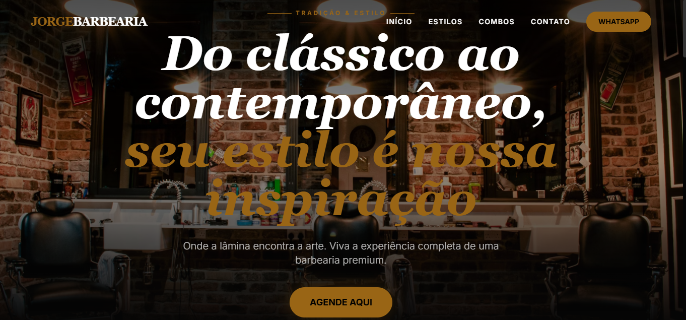
Landing Page Barbearia
Landing page moderna e responsiva, focada em conversão e identidade visual premium.
Analista de TI com foco em Desenvolvimento Web, Automação e Análise de Dados. Crio soluções digitais modernas, dashboards estratégicos e automações inteligentes.
Seleção de entregas em front-end, sistemas web e experiências publicadas.

Landing page moderna e responsiva, focada em conversão e identidade visual premium.
Site institucional com foco em apresentação de serviços e presença digital.
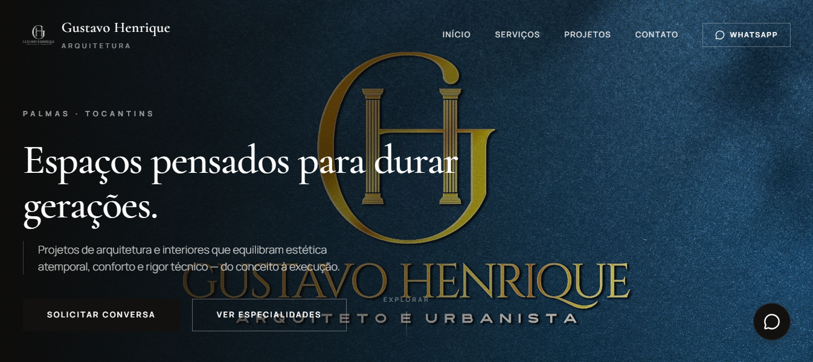
Landing institucional com layout refinado para escritório de arquitetura e portfólio visual.
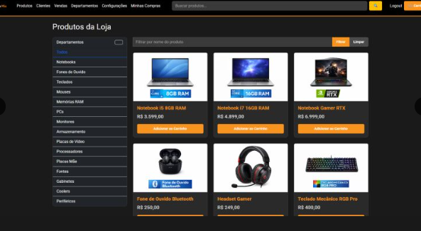
Projeto de carrinho de compras com regras de negócio, validações e backend estruturado.
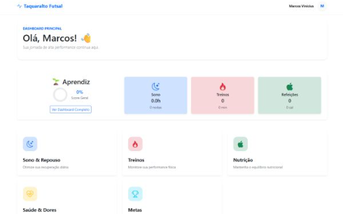
Sistema SaaS para rastreamento de sono, fitness e gestão esportiva.
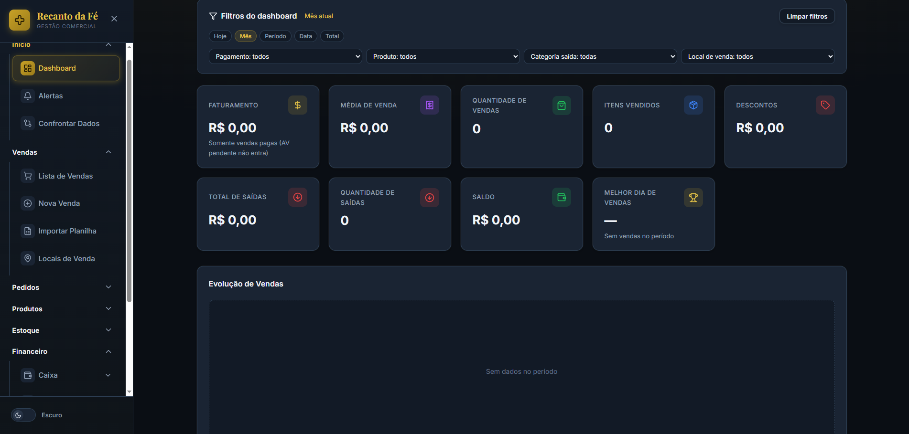
Gestão completa de vendas, estoque, caixa e contas a pagar/receber para loja comercial.
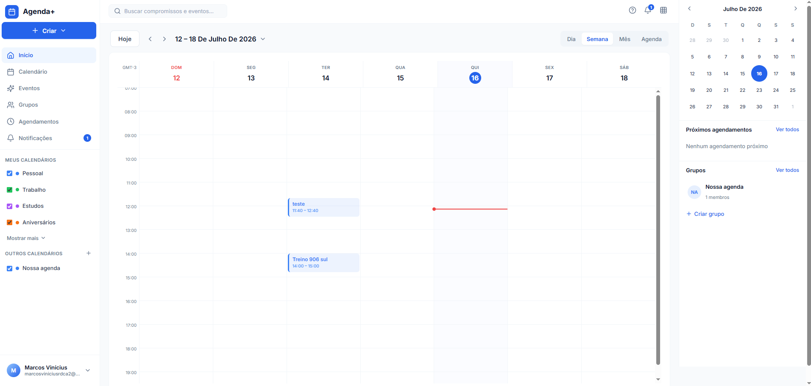
Sistema de compromissos pessoais e em grupo, com permissões, arquivos e lembretes via WhatsApp.
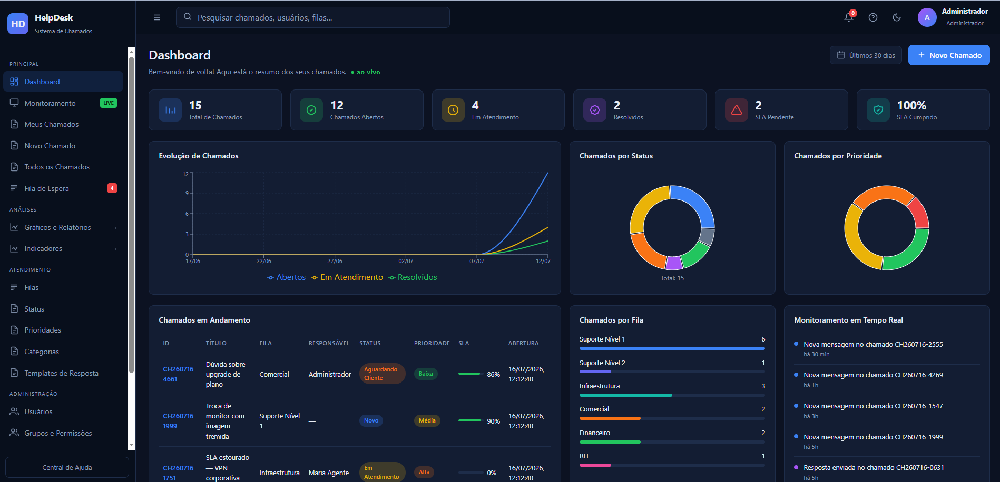
Abertura de chamados via WhatsApp com painel web para agentes, protocolos e acompanhamento.
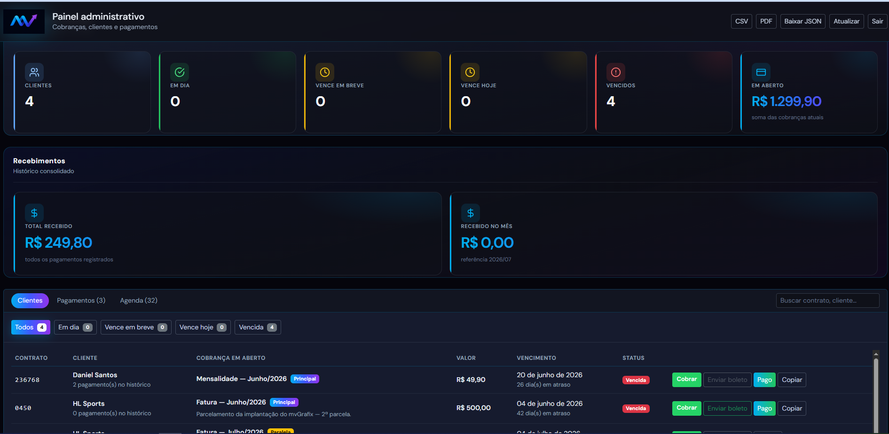
Interface para cobranças com PIX, boletos, QR Code e exportação de comprovantes em PDF.
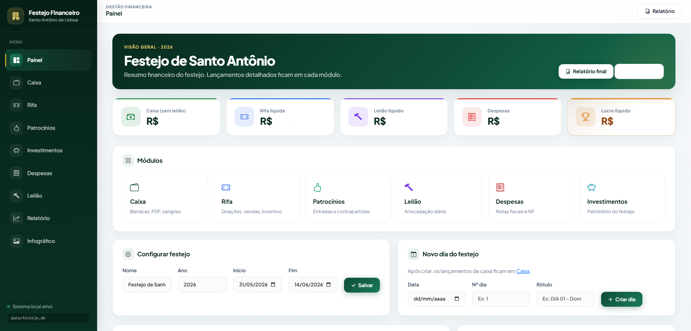
Sistema web institucional com backend FastAPI, templates e deploy preparado para Railway.
Visualização, indicadores e automações orientadas a dados.
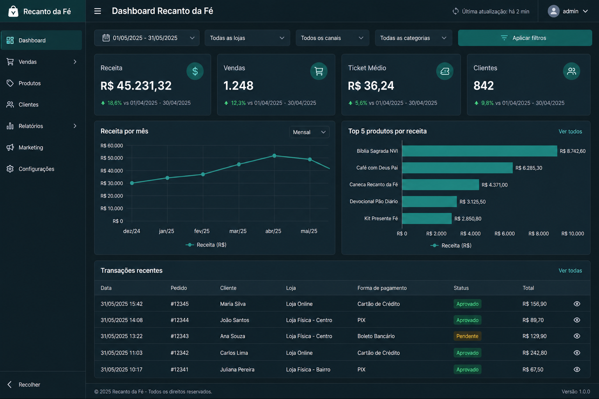
Análise de indicadores com visualização interativa usando Python.
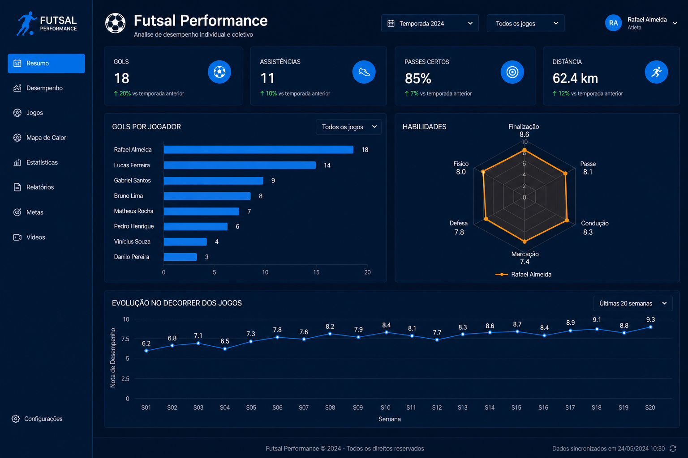
Scripts e análises em Python voltados a desempenho e dados de futsal.
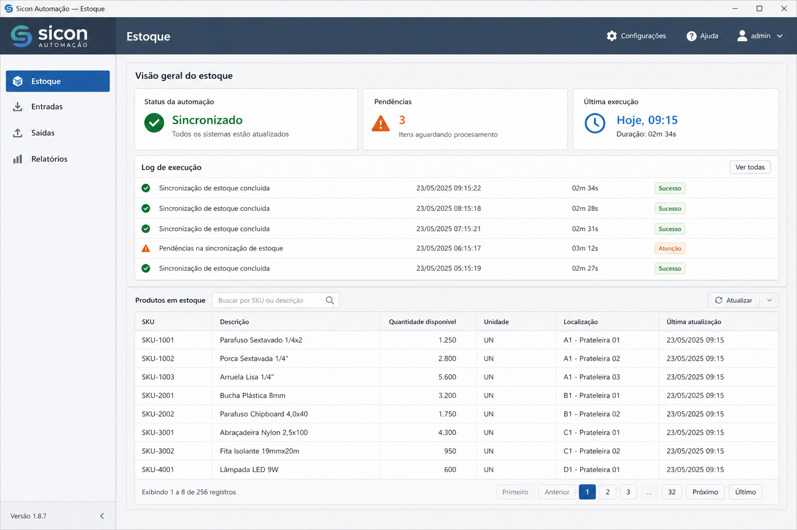
Automação em Python para fluxos de estoque integrados a sistemas corporativos.
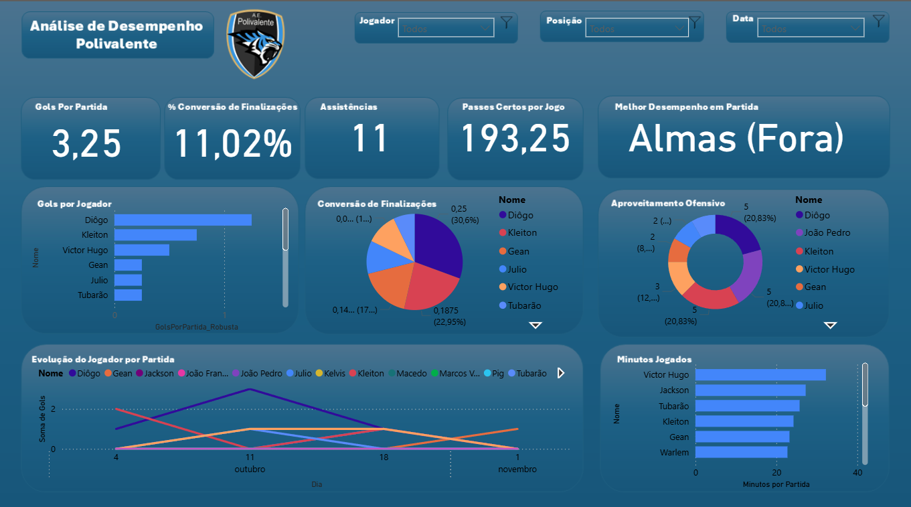
Dashboard estratégico com KPIs e análise visual (prints disponíveis).
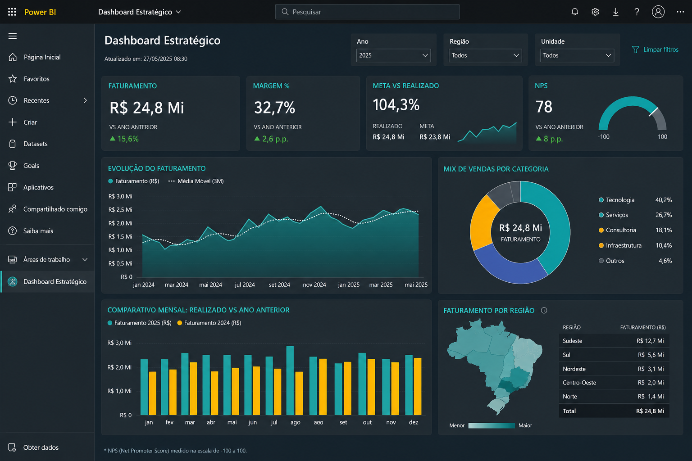
Análise avançada de indicadores estratégicos.
Linha do tempo no GitHub
Experiência em desenvolvimento, dados e inteligência de negócio aplicada a problemas reais.
Sou Desenvolvedor com foco em criação de aplicações web, automações e integrações de sistemas. Desenvolvo soluções eficientes, escaláveis e orientadas a negócio, utilizando boas práticas e tecnologias modernas.
Utilizo dados como base para apoiar soluções de software, otimizar processos e gerar indicadores confiáveis.
Desenvolvimento de dashboards e indicadores que transformam dados técnicos em informações claras para tomada de decisão.
Técnico em Informática Integrado ao Ensino Médio – IFTO (Concluído 2019)
Sistemas para Internet – Graduação – IFTO (Concluído 2025)
Engenharia de Software – Pós-Graduação (Cursando)
Inglês e Espanhol – Intermediário
Busco oportunidades como desenvolvedor, onde possa criar soluções, automatizar processos e utilizar dados para gerar valor real ao negócio.